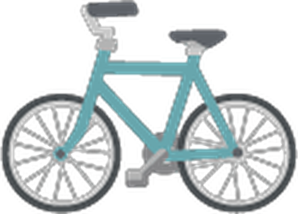

Blog de vida sostenible
Pequeños cambios, un planeta mejor
Guías prácticas para reducir tu huella ecológica sin complicarte la vida. Cada semana, un nuevo hábito verde.
Guías prácticas para reducir tu huella ecológica sin complicarte la vida. Cada semana, un nuevo hábito verde.
Convierte los restos de cocina en abono natural para tus plantas..
Por Ana Ruiz - 6 min de lectura
Dónde comprar, qué envases usar y cuánto dinero te ahorras...
Por Marco López - 8 min
Ahorra hasta un 30% mensual con cambios sencillos...
Por Lucia Fernández - 5 min

Rutas seguras, mantenimiento básico y accesorios...
Por Diego Soto - 10 min
Platos deliciosos que no echarás de menos ningún ingrediente...
Por Ana Ruiz - 7 min
Sistemas caseros y horarios perfectos para cada temporada...
Por Lucia Fernández - 4 min